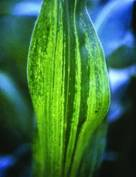

SUGARCANE :: MAJOR DISEASE :: SUGARCANE MOSAIC
Sugarcane Mosaic - Sugarcane mosaic potyvirus
Symptoms
The disease appears more prominently on the basal portion of the younger foliage as chlorotic or yellowish stripes alternate with normal green portion of the leaf. As infection becomes severe, yellow stripes appear on the leaf sheath and stalks. Elongated necrotic lesions are produced on the stalks and stem splitting occurs. The necrotic lesions also develop on the internodes and the entire plant becomes stunted and chlorotic.
|  |
Symptoms |
Pathogen
Sugarcane mosaic potyvirusis a flexous rod, 650-770nm long X 12-15nm with
ss RNA genome.
Disease cycle
The virus is mainly transmitted through infected canes used as seed. The virus also infects Zea maysand a number of other cereals(Sorghum vulgare, Pennisetum americanum,Eleusine indica, Setaria lutescens, Echinochloa crusgalli, Stenotaphrum secondatum, Digitaria didactyla)which serve as potential sources of virus inoculum. The virus also spreads through viruliferous aphids viz., Melanaphis sacchari, Rhopalosiphum maidisin a non-persistant manner. The virus is also sap-transmissible. The incubation period varies from 7 to 20 days, depending upon the host variety and virus strain. The symptoms may be prominent or masked depending on the environmental conditions and variety.
Management
{kind=link}
- Roguing of infected plants and use of disease free planting material.
- Chemical sprays to manage the insect vector population in early crop stage.
- G row mosaic-resistant or, at least, tolerant varieties.
- Breeding mosaic-resistant varieties is needed.
- Saccharum spontaneumL. and S. barberi (Jesweit) carry resistance to mosaic and so varieties with this background must be preferred.
- Rogue out the diseased clumps periodically. Select setts from the healthy fields as the virus is sett-borne Aerated Steam Therapy (AST) at 56˚C for 3 hrs, for setts before planting is advised.